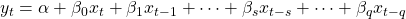
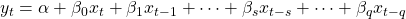
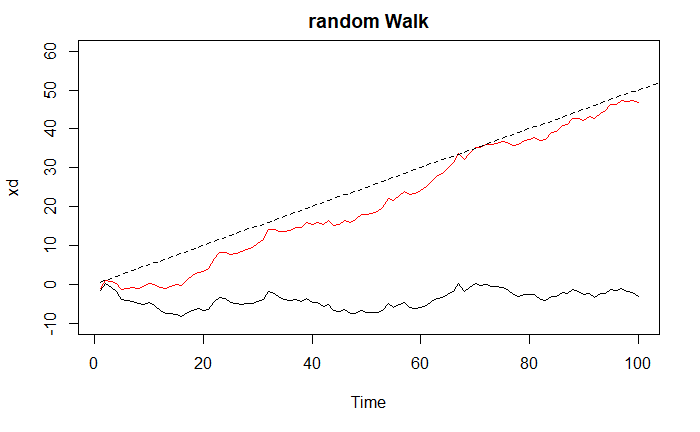
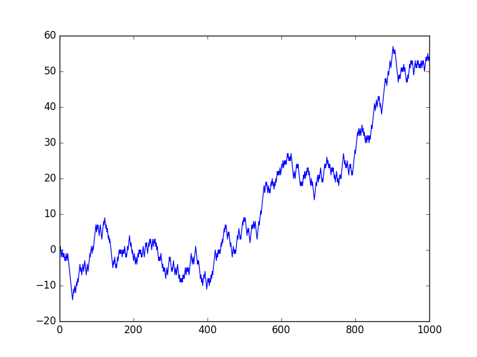
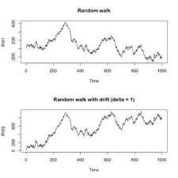
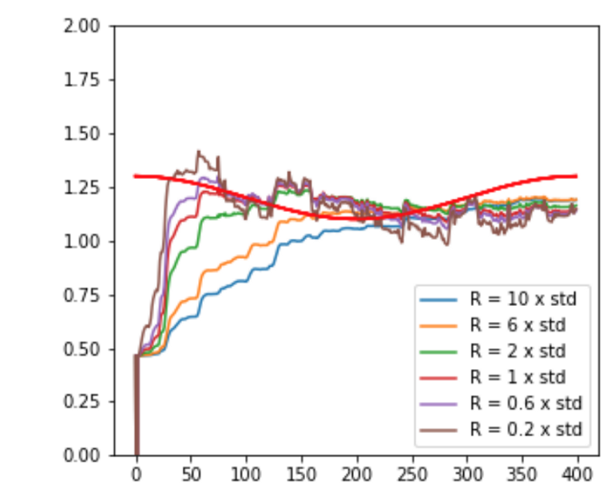
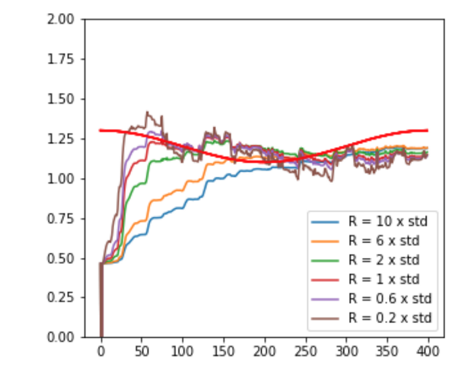
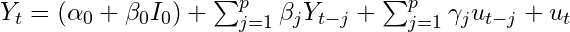

73 Forecasting, Statistical
TOC
- Misc
- Terms
- Processing
- Diagnostics
- Algorithms
- Regression (including ARIMA)
- Random Walk
- Prophet
- Kalman Filter
- Exponental Smoothing
- TBATS
- Interval Forecasting
Misc
- For intermittent data, see Logistics >> Demand Forecasting >> Intermittent Data
- Let the context of the decision making process determine the units of the forecast
- i.e. don’t forecast on a hourly scale just because you can.
- What can be forecast depends on the predictability of the event:
- how well we understand the factors that contribute to it;
- We have a good idea of the contributing factors: electricity demand is driven largely by temperatures, with smaller effects for calendar variation such as holidays, and economic conditions.
- how much data is available;
- There is usually several years of data on electricity demand available, and many decades of data on weather conditions.
- how similar the future is to the past;
- For short-term forecasting (up to a few weeks), it is safe to assume that demand behaviour will be similar to what has been seen in the past.
- whether the forecasts can affect the thing we are trying to forecast.
- For most residential users, the price of electricity is not dependent on demand, and so the demand forecasts have little or no effect on consumer behaviour.
- how well we understand the factors that contribute to it;
- Starting a project
- Understand the dgp through eda and talking to domain experts
- how are sales generated? (e.g. online, brick and mortar,…)
- What is the client currently using to forecast?
- model that you need to beat
- where does it fail?
- biased? underfitting or overfitting somewhere
- missing seasonality?
- What is the loss function?
- carrying this many items in inventory results in this cost
- if we’re out of stock and lose this many sales, how much does this cost
- What does the client really want?
- how is success measured
- Understand the dgp through eda and talking to domain experts
- fable models produce different results with NAs in the time series
- in rolling cfr project, steinmetz’s manually calc’d rolling 7-day means and his lagged vars had NAs, models using data with and without NAs had different score
- it is helpful to keep track of and understand what our forecast bias has historically been. Even where we are fortunate enough to show a history of bias in both directions.
- Forecasting shocks is difficult for an algorithm
- It can better to smooth out (expected) shocks (Christmas) in the training data and then add an adjustment to the predictions during the dates of the shocks.
- The smoothed out data will help the algorithm produce more accurate predictions for days when there isn’t an expected shock.
- Examples of shocks that may need training data to have manual adjustments and not be smoothed by an algorithm
- one-time spikes due to abnormal weather conditions
- one-off promotions
- a sustained marketing campaign that is indistinguishable from organic growth.
- Intermittent(or sporadic) time series (lotsa zeros).
- {thief} has the latest methods while {tsintermittent} has older methods
- Benchmark models
- naive
- 28-day moving average (i.e. 4 week MA)
Terms
- Weak stationarity (commonly referred to as just stationarity)(aka covariance stationary): implies that the mean and the variance of the time series are finite and do not change with time.
- Cointegration: xt and yt are cointegrated if xt and yt are I(1) series and there exists a β such that zt = xt - βyt is an I(0) series (i.e. stationary).
- important for understanding stochastic or deterministic trends.
- the differences in the means of the set of cointegrated series remain constant over time, without offering an indication of directionality
- might have low correlation, and highly correlated series might not be cointegrated at all.
- Can use Error Correction Model (ECM) with differenced data and inserting a error correction term (residuals from a OLS regression)
- Stochastic - no value of a variable is known with certainty. Some values may be more likely than others (probabilistic). Variable gets mapped onto a distribution.
Processing
- Filling in gaps
- Bi-directional forecast method from AutoML for time series: advanced approaches with FEDOT framework
- Steps
- Smooth series prior to the gap
- They used a “Gaussian filter w/sigma = 2” (not sure what that is)
- Create lagged features of the smoothed series
- Forecast using ridge regression where h = length of gap
- Repeat in the opposite direction using the series after the gap
- Use the average of the forecasts to fill the gap in the series.
- Smooth series prior to the gap
- Steps
- Bi-directional forecast method from AutoML for time series: advanced approaches with FEDOT framework
- Log before differencing (SO post)
- Detrending versus differencing to get a stationary series
- (The goal is to get a stationary series, so if one doesn’t work try the other.)
- Differencing (for unit root processes)(stochastic trend)
- if the process requires differencing to be made stationary, then it is called difference stationary and possesses one or more unit roots.
- Sometimes see charts of roots and a unit circle. I read this in an article about VAR models “process is stationary if all the roots z1, . . . , zn of the determinant det(ψ(z)), or det(I − Bz) = 0, lie outside of the unit circle.”
- One advantage of differencing over detrending to remove trend is that no parameters are estimated in the differencing operation.
- One disadvantage, however, is that differencing does not yield an estimate of the stationary process
- If the goal is to coerce the data to stationarity, then differencing may be more appropriate.
- Differencing is also a viable tool if the trend is fixed
- random walking looking series should be differenced and not detrended.
- Backshift operator notation:
- in general: ∇d = (1 − B)d
- where d is the order of differencing
- Fractional differencing is when 0 < d < 1
- when 0 < d < 0.5, the series is classified as a long term memory series (often used for environmental time series arising in hydrology)
- If d is negative, then its called forward-shift differencing
- Examples
- B yt = yt-1; B2 yt = yt-2
- Seasonal Difference: (1 - B)(1 - Bm) yt = (1 - B - Bm + Bm + 1)yt = yt - yt-1 - yt-m + yt-m-1
- ARIMA : AR(p)(I) = MA(q)
- ARIMA(1,1,1)(1,1,1)4 for quarterly data (m = 4)
- in general: ∇d = (1 − B)d
- if the process requires differencing to be made stationary, then it is called difference stationary and possesses one or more unit roots.
- Detrending (for trend-stationary processes)(deterministic trend)
- It is possible for a time series to be non-stationary, yet have no unit root and be trend-stationary
- a trend-stationary process is a stochastic process from which an underlying trend (function solely of time) can be removed (detrended), leaving a stationary process.
- If an estimate of the stationary process is essential, then detrending may be more appropriate.
- How is this back-transformed after forecasting?
- maybe look at “forecasting with STL” section in fpp2
- It is possible for a time series to be non-stationary, yet have no unit root and be trend-stationary
- In both unit root and trend-stationary processes, the mean can be growing or decreasing over time; however, in the presence of a shock, trend-stationary processes are mean-reverting (i.e. transitory, the time series will converge again towards the growing mean, which was not affected by the shock) while unit-root processes have a permanent impact on the mean (i.e. no convergence over time).
- Testing
- KPSS test: H0 = trend-stationary, Ha = unit root.
- urca::ur_kpss the H0 is stationarity
- tseries::kpss.test(res, null = “Trend”) where H0 is “trend-stationarity”
- Dickey-Fuller tests: H0 = unit root, Ha = stationary or trend-stationary depending on version
- KPSS-type tests are intended to complement unit root tests, such as the Dickey–Fuller tests. By testing both the unit root hypothesis and the stationarity hypothesis, one can distinguish series that appear to be stationary, series that appear to have a unit root, and series for which the data (or the tests) are not sufficiently informative to be sure whether they are stationary.
- KPSS test: H0 = trend-stationary, Ha = unit root.
- Steps:
- ADF:
- If H0 rejected. The trend (if any) can be represented by a deterministic linear trend.
- If H0 is not rejected then we apply the KPSS test.
- KPSS :
- If H0 rejected then we conclude that there is a unit root and work with the first differences of the data.
- Upon the first differences of the series we can test the significance of other regressors or choose an ARMA model.
- If H0 is not rejected then data doesn’t contain enough information. In this case it may be safer to work with the first differences of the series.
- If H0 rejected then we conclude that there is a unit root and work with the first differences of the data.
- ADF:
- Steps when using an ARIMA:
- Suppose the series is not trending
- If the ADF test (without trend) rejects, then apply model directly
- If the ADF test (without trend) does not reject, then model after taking difference (maybe several times)
- Suppose the series is trending
- If the ADF test (with trend) rejects, then apply model after detrending the series
- If the ADF test (with trend) does not reject, then apply model after taking difference (maybe several times)
- Suppose the series is not trending


Diagnostics
- Testing for significant difference between model forecasts
- Nemenyi test
- tsutils::nemenyi( )
- MCB
- greybox::rmcb( )
- Nemenyi test
Algorithms
- Misc
- auto.arima, ets and theta are general-purpose methods particularly well-suited for monthly, quarterly and annual data
- TBATS and STL will also handle multiple seasonalities such as arise in daily and weekly data.
- When to try nonlinear models (see Forecasting, Nonlinear)
- Linear prediction methods (e.g. ARIMA) don’t produce adequate predictions
- Chaotic nature of the time series is obvious (e.g. frequent, unexplainable shocks that can’t be explained by noise)
- Regression (including ARIMA)
- Misc
- Double check auto_arima, for the parameters, (p, d, q), one should pick q to be at least p (link)
- Sometimes the error terms are called “random shocks.”
- If using lm( ) and there are NAs, make sure to use na.action = NULL else they get removed and therefore dates between variables won’t match-up. See lm doc for further details on best practices.
- ARIMA models make h-step out predictions by iterating 1-step forward predictions and feeding the intermediate predictions in as if they were actual observations (0 are used for the errors)
- Polynomial Autoregression (AR) models exponentiate the lags. So the design matrix includes the lags and the exponentiated series.
- If the polynomial is order 3, then order 2 is also included. So, now, the design matrix would be the lags, the square of each lag, and the cube of each lag
- Misc
library(dplyr); library(timetk)
# tbl w/polynomial design matrix of order 3
# value is the ts values
poly_tbl <- group_tbl %>%
tk_augment_lags(.value = value, .lags = 1:4) %>%
mutate(across(contains("lag"), .fns = list(~.x^2, ~.x^3), .names = "{.col}_{ifelse(.fn==1, 'quad','cube'){style='color: #990000'}[}]{style='color: #990000'}")).fn is the item number in the .fns list.
squared lag 2 will have the name “value_lag2_quad”
Types
- AR: single variable with autoregressive dependent variable terms
- ARMA: same as AR but errors models as a moving average
- ARIMA: same as ARMA but with differencing the timeseries
- SARIMA: same as ARIMA but also with seasonal P, D, Q terms
- ARMAX: same as ARMA but with additional exogenous predictors
- Dynamic Regression: OLS regression with modeled (usually arima) errors
OLS vs ARIMA
- John Mount
- The fear in using standard regression for time series problems is that the error terms are likely correlated.
- So one can no longer appeal to the Gauss Markov Theorem (i.e. OLS is BLUE) to be assured of good out of sample performance (link)
- The fear in using standard regression for time series problems is that the error terms are likely correlated.
- ryer and chan regarding Dynamic Regression vs OLS
- “regression (with arima errors) coefficient estimate on Price is similar to that from the OLS regression fit earlier, but the standard error of the estimate is about 10% lower than that from the simple OLS regression. This illustrates the general result that the simple OLS estimator is consistent but the associated standard error is generally not trustworthy”
- Hyndman
- “The forecasts from a regression model with autocorrelated errors are still unbiased, and so are not “wrong,” but they will usually have larger prediction intervals than they need to. Therefore we should always look at an ACF plot of the residuals.”
- The estimated coefficients are no longer the best estimates, as some information has been ignored in the calculation;
- meaning modeling the errors to take into account the autocorrelation
- Any statistical tests associated with the model (e.g., t-tests on the coefficients) will be incorrect.
- affected by the bloated std errors
- The AICc values of the fitted models are no longer a good guide as to which is the best model for forecasting.
- In most cases, the p-values associated with the coefficients will be too small, and so some predictor variables will appear to be important when they are not. This is known as “spurious regression.”
- John Mount
trend (β1 t) is modeled by setting the variable t to just an index variable (i.e. t = 1, …., T). Modeling quadratic trend would be adding in t2 to the model formula.
- Hyndman suggests that using splines is a better approach than using t2
- From Steinmitz’s CFR article
- Instead of trend() (like in forecast::), he’s using poly(date, 2) to include a quadratic trend
R2 and adj R2
- Appropriate for time series (i.e. estimate of the population R2), as long as the data are stationary and weakly dependent
- i.e. the variances of both the errors and the dependent variable do not change over time.
- i.e. if yt has a unit root (integrated of order 1, I(1)) (need differenced)
- Appropriate for time series (i.e. estimate of the population R2), as long as the data are stationary and weakly dependent
Interpretation of coefficients
- 
- If x increases by one unit today, the change in y will be β0+β1+…+βs after s periods; this quantity is called the s -period interim multiplier. The total multiplier is equal to the sum of all β s in the model.
- 
Residuals
- types
- “regression” is for the main model
- original data minus the effect of the regression variables
- “innovation” is for the error model
- default arg
- Hyndman uses these for dynamic regression residual tests
- “regression” is for the main model
- autocorrelation tests
- failing the test does not necessarily mean that (a) the model produces poor forecasts; or (b) that the prediction intervals are inaccurate. It suggests that there is a little more information in the data than is captured in the model. But it might not matter much.
- Breusch-Godfrey test designed for pure regression or straight AR model
- does handle models with lagged dependent vars as predictors
- LM (lagrange multiplier) test
- forecast::checkresiduals can calc it and display it but you don’t have access to the values programmatically
- defaults for max lag is min(10,n/5) for nonseasonal and min(2m, n/5) for seasonal; freq is seasonality, m
- types
lag <- ifelse(freq > 1, 2 * freq, 10)
lag <- min(lag, round(length(residuals)/5))
lag <- max(df+3, lag)lmtest and DescTools (active) packages have the function that forecast uses but only takes lm objects
Durbin-Watson designed for pure regression
- error term can’t be correlated with predictor to use this test
- so no lagged dependent variables can be used as predictors
- there is an durbin alternate test mentioned in stata literature that can do lagged variables but I haven’t seen a R version that specifies that’s the version it is.
- lmtest or DescTools takes a lm object and has a small sample size correction available
- car::durbinWatsonTest takes a lm object or residual vector.
- Only lm obj returns pval. Resid vector returns dw statistic
- pvals < 0.05 –> autocorrelation present
- dw statistic guide (0 < dw < 4)
- around 2 –> no autocorrelation
- signifcantly < 2 –> positive correlation
- saw values < 1 have pvals = 0
- significantly > 2 –> negative correlation
- error term can’t be correlated with predictor to use this test
Ljung-Box
- For dyn regression, arima, ets, etc.
- There’s a SO post that shows this shouldn’t be used for straight regression
- https://stats.stackexchange.com/questions/148004/testing-for-autocorrelation-ljung-box-versus-breusch-godfrey
- For straight AR models, the comments show it should be fine as long as lags arg > model df arg (see below)
- There’s a SO post that shows this shouldn’t be used for straight regression
- test is whether a group of lagged residuals has significant autocorrelation, so an acf of the residuals might show individual spikes but the group as a whole may not have significant autocorrelation
- if you see a spike in the residuals, may be interesting to include that lag number in the group of lags and see if significance of the group changes
- feasts::ljung_box
- requires numeric residuals vector, model degrees of freedom, number of lags to check
- model df = number of variables used in the regression + intercept + p + q (of arima error model)
- e.g. model with predictors: trend + cases and an error model: arima (2,1,1) had df = 2 (predictors: trend, cases) + 1 (intercept) + 2 (p) + 1 (q) = 6 d.f.
- dof <– length(fit$coef)
- See Breusch-Godfrey section for number of lags to use
- model df = number of variables used in the regression + intercept + p + q (of arima error model)
- requires numeric residuals vector, model degrees of freedom, number of lags to check
- pvals < 0.05 –> autocorrelation present
- For dyn regression, arima, ets, etc.
Spectral analysis takes the approach of specifying a time series as a function of trigonometric components (i.e. regression with fourier terms)
- A smoothed version of the periodogram, called a spectral density, can also be constructed and is generally preferred to the periodogram.
Random Walk
- A process integrated to order 1, (an I(1) process) is one where its rate of change is stationary. Brownian motion is a canonical I(1) process because its rate of change is Gaussian white noise, which is stationary. But the random walk itself is not stationary. So the t+1 value of a random walk is just the value at t plus a number sampled from some bell curve.
- Characteristics
- long periods of apparent trends up or down
- sudden and unpredictable changes in direction
- Examples with and without drift
- 
- 
- 
Prophet
- The basic methodology is an iterative curve-matching routine, where Prophet will then train your data on a bigger period, then predict again and this will repeat until the end point is reached. The development team of Prophet claim that its strengths are:
- Working with high-frequency data (hourly, daily, or weekly) with multi-seasonality, such as hour of day, day of week and time of year;
- special events and bank holidays that are not fixed in the year;
- allowing for the presence of a reasonable number of missing values or large outliers;
- accounting for changes in the historical trends and non-linear growth curves in a dataset.
- Further advantages include the ability to train from a moderate sized dataset, without the need for specialist commercial software, and fast start up times for development.
- Disadvantages
- no autoregressive (i.e. lags of target series) features since it’s a curve-fitting algorithm Time series decomposition by prophet:
- g(t): Logistic or linear growth trend with optional linear splines (linear in the exponent for the logistic growth). The library calls the knots “change points.”
- s(t): Sine and cosine (i.e. Fourier series) for seasonal terms.
- h(t): Gaussian functions (bell curves) for holiday effects (instead of dummies, to make the effect smoother).
- The basic methodology is an iterative curve-matching routine, where Prophet will then train your data on a bigger period, then predict again and this will repeat until the end point is reached. The development team of Prophet claim that its strengths are:
Kalman Filter Notes from How a Kalman filter works, in pictures
If a dynamic system is linear and with Gaussian noise (inaccurate measurements, etc.), the optimal estimator of the hidden states is the Kalman Filter
- For nonlinear systems, we use the extended Kalman filter, which works by simply linearizing the predictions and measurements about their mean. (I may do a second write-up on the EKF in the future)
- Good for predictions where the measurements of the outcome variable over time can be noisy
Assumptions
- Gaussian noise
- Markov property
- if you know xt−1, then knowledge of xt−2, . . . , x0 doesn’t give any more information about xt (i.e. not much autocorrelation if at all)
tl;dr
- A predicted value from a physically-determined autoregression-type equation with 1 lag that gets adjusted for measurement error
Advantages
- light on memory (they don’t need to keep any history other than the previous state)
- very fast, making them well suited for real time problems and embedded systems
Use cases
- engineering: common for reducing noise from sensor signals (i.e. smoothing out measurements)
- detection-based object tracking (computer vision)
First set of equations
.png) Notes This set of equations deals physical part of the system. It’s kinda how we typically forecast. The x^k equation is pretty much like a typical auto-regression plus explanatory variables except for the F matrix which may require knowledge of system dynamics
Notes This set of equations deals physical part of the system. It’s kinda how we typically forecast. The x^k equation is pretty much like a typical auto-regression plus explanatory variables except for the F matrix which may require knowledge of system dynamics* Wiki shows a term, wk, added to the end of the x^k equation. wk is the process noise and is assumed to be drawn from a zero mean multivariate normal distribution, The **new best estimate** is a **prediction** made from **previous best estimate**, plus a **correction** for **known external influences**. x^k is the step-ahead predicted "state"; x^k-1 is the current "state" uk ("control" vector) is an explanatory variable(s) Fk ("prediction" matrix) and Bk ("control" matrix) are transformation matrices Fk was based on one of Galileo's equations of motion in the example so this might be very context specific Might need to based on substantial knowledge of the system to create a system of linear equations (i.e. Fk matrix) that can be used to model the it. And the **new uncertainty** is **predicted** from the **old uncertainty**, with some **additional uncertainty from the environment**. Pk and Pk-1 are variance/covariance matrices for the step-ahead predicted state and current state respectively Qk is the uncertainty term for the variance/covariance matrix of the predicted state distributionSecond Set of Equations

.png) Notes These equations refine the prediction of the first set of equations by taking into account various sources of measurement error in the observed outcome variable
Notes These equations refine the prediction of the first set of equations by taking into account various sources of measurement error in the observed outcome variableThe equations do this by finding the intersection, which is itself a distribution, of the transformed prediction distribution, μ0, and the measurement distribution, μ1.  * This mean, μ', of this intersection distribution is the predicted value that most likely to be the true value Hk is a transformation matrix that maps the predicted state (result of the first set of equations), x^k , to the measurement space where Hk \* x^k is the expected measurement (pink area) (i.e. mean of the distribution of transformed prediction) z→k is the mean of the measurement distribution (green area) x^'k is the intersection of the transformed prediction distribution and the measurement distribution i.e. the predicted state thats most likely to true Rk is the uncertainty term for variance/covariance matrix for the measurement distribution K' is called the Kalman Gain Didn't read anything interpretative about the value. Just seems to a mathematical construct that's part of the derivation. In the derivation, it starts out as the ratio of the measurement covariance matrix to the sum of the measurement variance covariance matrix and the transformed prediction variance covariance matrix Process

Hyperparameters
- Q is the process noise covariance
- Controls how sensitive the model will be to process noise.
- R is the measurement noise variance
- Controls how quickly the model adapts to changes in the hidden state.
- Guessing “std” is the default value?
- Controls how quickly the model adapts to changes in the hidden state.
- Q is the process noise covariance
Exponential Smoothing
- The general idea is that future values are a weighted average of past values, with the weights decaying exponentially as we go back in time
- Methods
- simple exponential smoothing
- double exponential smoothing or Holt’s method (for time series with a trend)
- triple exponential smoothing or Holt-Winter’s method (for time series with a trend and sesaonality)
TBATS
- Trigonometric seasonality, Box-Cox transformation, ARMA errors, Trend, and Seasonal components
- Can treat non-linear data, solve the autocorrelation problem in residuals since it uses an ARMA model, and it can take into account multiple seasonal periods
- Represents each seasonal period as a trigonometric representation based on Fourier series. This allows the model to fit large seasonal periods and non-integer seasonal periods
Interval Forecasting
- Interval data is commonly analyzed by modeling the range (difference between interval points)
- Range data doesn’t provide information about the variation of the mean (aka level) over time.
- Range only provides information about the boundaries, where interval analysis provides information about the boundary and the interior of the interval.
- Provides more information than point forecasts.
- Data examples:
- daily temperature, stock prices: Each day a high and low values are recorded
- stock price volatility, bid-ask spread use hi-lo value differences
- Intra-house inequality: difference between wife and husband earnings
- urban-rural income gap
- interval-valued output growth rate: China reports it’s targeted growth rate as a range now.
- diastolic and systolic blood pressure
- others: blood lipid, white blood cell count, hemoglobin
- Examples where (generalized) intervals can be modeled instead of differences:
- Stock volatility
- GARCH models often used to model volitility but Conditional Autoregressive Range (CARR) gives better forecasts
- Because GARCH model is only based on the closing price but the CARR model uses the range (difference).
- Dynamic Interval Modeling
- Use Autoregressive Interval (ARI) model to estimate the parameters using an interval time series (not the range)
- Then take the forecasted left and right values of the interval to forecast the volatility range in a CARR model
- The extra information of the interval data over time (instead of a daily range) yields a more efficient estimation of the parameters
- GARCH models often used to model volitility but Conditional Autoregressive Range (CARR) gives better forecasts
- Capital Asset Pricing Model (CAPM)
- Standard Equation
- Rt - Rft = α + β(Rmt - Rft) + εt
- Rt: return of certain portfolio
- Rft: risk-free interest rate
- Rmt: return of market portfolio
- Rt - Rft: asset risk premium
- Rt - Rft = α + β(Rmt - Rft) + εt
- Interval-based version
- Yt = (α0 + β0I0) + βXt + ut
- I0 = [-0.5, 0.5]
- Yt = [Rft, Rt]
- Xt = [Rft, Rmt]
- The Rt - Rft can then be calculated by taking the difference of the interval bounds of the interval-based predictions
- Yt = (α0 + β0I0) + βXt + ut
- Standard Equation
- Stock volatility
- Model the center of the interval and the range in a bi-variate VAR model (doesn’t use all points in the interval data)
- Bi-variate Nonlinear Autoregressive Model for center and range
- Has an indicator variable that captures nonlinearity of interval data
- Space-time autoregressive model
- Bi-variate Nonlinear Autoregressive Model for center and range
- Autoregressive Conditional Interval model
- The interval version of an ARMA model
- depends on lags and lagged residuals
- ACI(p,q):
- α0, β0, βj, γj are unknown scalar parameters
- I0 = [-1/2, 1/2] is a unit interval
- α0 + β0I0 = [α0 - β0/2, α0 + β0/2] is a constant interval intercept
- ut is the interval residuals that satisfies E(ut|It-1) = [0,0]
- Yt is a random interval variable
- Objective function that gets minimized is called Dk distance
- D2K [ut(θ),0]
- ut(θ) is the interval residuals
- K refers to some kind of kernel function
- it’s a wacky quadratic with constants a,b,c
- measures the distance between all pairs of points
- The minimization is a two-stage process
- Finds the optimal kernel, K, then uses it to minimize the residuals to estimate the parameters
- D2K [ut(θ),0]
- The interval version of an ARMA model
- Threshold Autoregressive Interval (TARI)
- nonlinear ACI model and interval version of TAR(p) model (¯\_(ツ)_/¯)
- 2-procedure model
- basically 2 autoregressive equations with an i1ut or i2ut added on to the end.
- The interval series, Yt ,follows one of the equations based on threshold variable qt is less than or equal to a threshold parameter, γ or great than.
- Estimation is similar to ACI model
- For more details, need to research what a TAR model (Terasvirta, Tjostheim, and Granger 2010) is